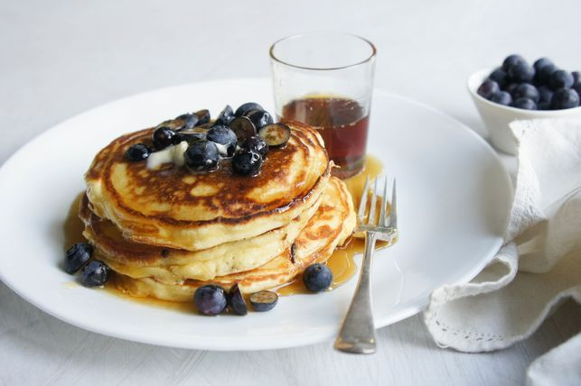

French Toast

Light and fluffy pancakes.
A pancake is a flat cake, often thin and round, prepared from a starch-based batter that may contain eggs, milk and butter and cooked on a hot surface such as a griddle or frying pan, often frying with oil or butter.
Ingredients
- 2 cups self-raising flour
- 2 eggs lightly beaten
- 1 1/2 cups milk
- 1/3 cup caster sugar
- 2 tbs ricotta
Steps
- Sift flour into a large mixing bowl.
- Quickly mix in remaining ingredients until well combined.
- Pour ⅓ cup of batter at a time into a heated, greased frying pan, and turn when the surface bubbles.